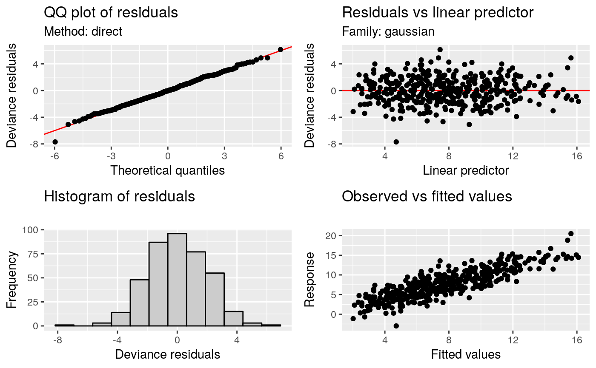
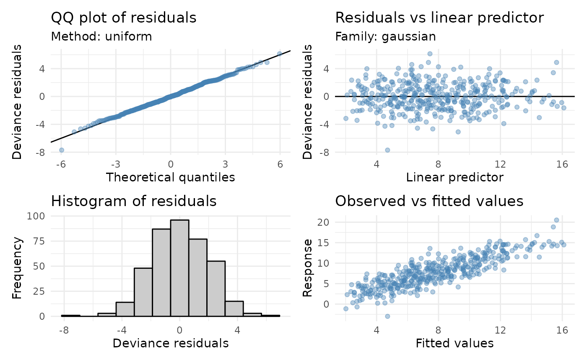

Model diagnostic plots
Usage
appraise(model, ...)
# S3 method for gam
appraise(
model,
method = c("uniform", "simulate", "normal", "direct"),
n_uniform = 10,
n_simulate = 50,
type = c("deviance", "pearson", "response"),
n_bins = c("sturges", "scott", "fd"),
ncol = NULL,
nrow = NULL,
guides = "keep",
level = 0.9,
ci_col = "black",
ci_alpha = 0.2,
point_col = "black",
point_alpha = 1,
line_col = "red",
...
)
# S3 method for lm
appraise(model, ...)Arguments
- model
a fitted model. Currently only class
"gam".- ...
arguments passed to
patchwork::wrap_plots().- method
character; method used to generate theoretical quantiles. Note that
method = "direct"is deprecated in favour ofmethod = "uniform".- n_uniform
numeric; number of times to randomize uniform quantiles in the direct computation method (
method = "direct") for QQ plots.- n_simulate
numeric; number of data sets to simulate from the estimated model when using the simulation method (
method = "simulate") for QQ plots.- type
character; type of residuals to use. Only
"deviance","response", and"pearson"residuals are allowed.- n_bins
character or numeric; either the number of bins or a string indicating how to calculate the number of bins.
- ncol, nrow
numeric; the numbers of rows and columns over which to spread the plots.
- guides
character; one of
"keep"(the default),"collect", or"auto". Passed topatchwork::plot_layout()- level
numeric; the coverage level for QQ plot reference intervals. Must be strictly
0 < level < 1. Only used withmethod = "simulate".- ci_alpha, ci_col
numeric; the level of alpha transparency for the QQ plot reference interval when
method = "simulate", or points drawn in plots.- point_col, point_alpha
colour and transparency used to draw points in the plots. See
graphics::par()section Color Specification. This is passed to the individual plotting functions, and therefore affects the points of all plots.- line_col
colour specification for the 1:1 line in the QQ plot and the reference line in the residuals vs linear predictor plot.
Note
The wording used in mgcv::qq.gam() uses direct in reference to the
simulated residuals method (method = "simulated"). To avoid confusion,
method = "direct" is deprecated in favour of method = "uniform".
See also
The plots are produced by functions qq_plot(),
residuals_linpred_plot(), residuals_hist_plot(),
and observed_fitted_plot().
Examples
load_mgcv()
set.seed(2)
## simulate some data...
dat <- gamSim(1, n = 400, dist = "normal", scale = 2)
#> Gu & Wahba 4 term additive model
mod <- gam(y ~ s(x0) + s(x1) + s(x2) + s(x3), data = dat)
## run some basic model checks
appraise(mod, point_col = "steelblue", point_alpha = 0.4)

## To change the theme for all panels use the & operator, for example to
## change the ggplot theme for all panels
library("ggplot2")
appraise(mod, point_col = "steelblue", point_alpha = 0.4,
line_col = "black") & theme_minimal()
